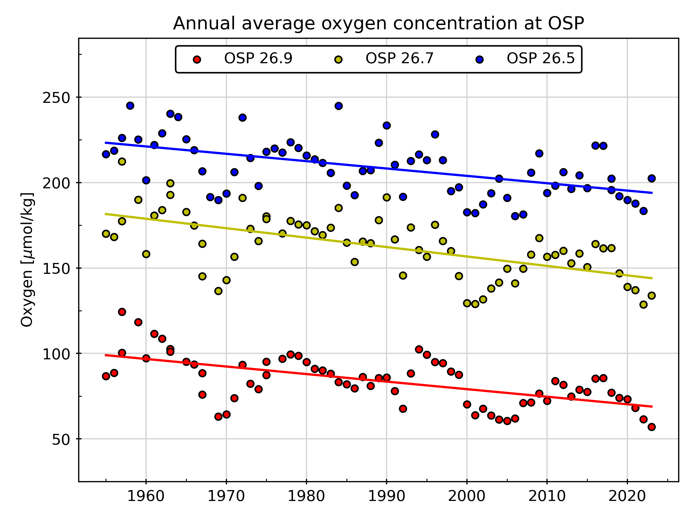
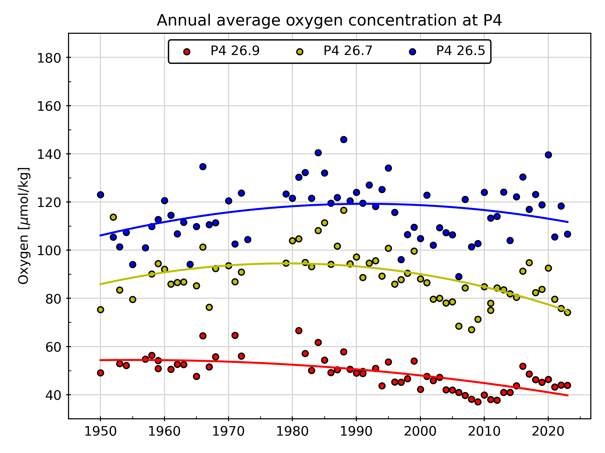

Figure from Water Properties.
February 2024
This page hosts plots of data from stations P4 and P26 (Ocean Station Papa - OSP) on Line P. The data were obtained from the Institute of Ocean Sciences (IOS) and National Oceanographic and Atmospheric Administration (NOAA) archives. More information on the Line P Program is available on the Water Properties website, including a full list of publications.
Figure from Water Properties.
The plots below were reproduced from Crawford & Peña (2021) and show oxygen on potential density anomaly surfaces. The Python code for carrying out the data processing and plotting for figures is located on GitHub.
 The potential density anomaly surfaces 26.9, 26.7 and 26.5 correspond to the potential density surfaces 1026.9 kg/m3, 1026.7 kg/m3 and 1026.5 kg/m3, respectively. 1-degree and 2-degree trends were computed using least squares.
Crawford and Peña. 2021. In Boldt et al. 2021. State of the physical, biological and selected
fishery resources of Pacific Canadian marine ecosystems in 2020. Can. Tech. Rep. Fish. Aquat.
Sci. 3434: vii + 231 p.
Data Products Team, Ocean Sciences Division
DFO.PAC.SCI.IOSData-DonneesISO.SCI.PAC.MPO@dfo-mpo.gc.ca
{kind=link}
{kind=link}